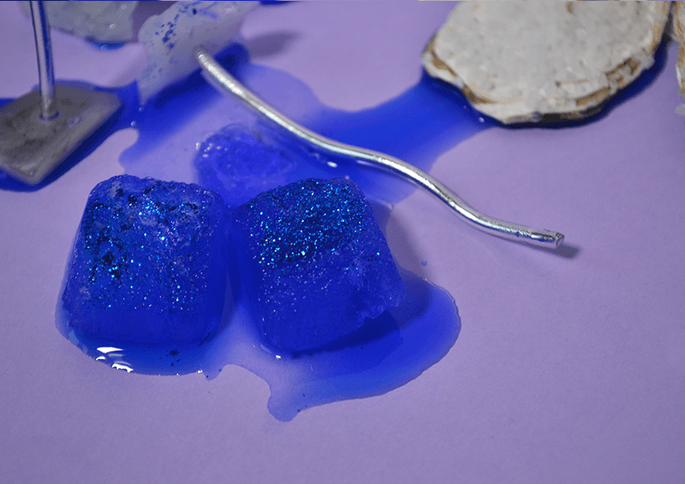
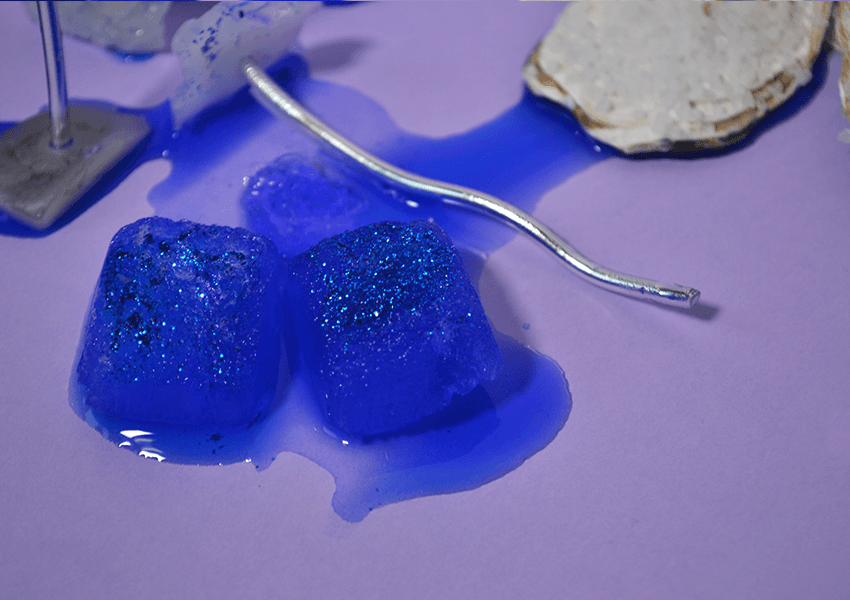

Top chef
Atelier d’après plusieurs caractéristiques de plats « glacé —
âpre — velouté — doux — enrobé ». J’ai cherché à représenter
graphiquement des sensations liées à la nourriture. Chaque élément
est traité comme une tapas et est élaboré grâce à une recette.
12/2017
——>


 
